# -*- coding: utf-8 -*-
# ---------------------------------------------------------------------------
# SASAP Reproducible Analyses in R Workshop
# Author: Timm Nawrocki
# Created on: 2018-05-17
# Usage: Code is intended to be executed as an R markdown or R script in RStudio.
# Description: "R Assignment 2: Data Summary" is an R assignment for BIOL-A601, Fall 2018.
# ---------------------------------------------------------------------------The set up code installs libraries used in this assignment if any are not already installed. Sets a working file based on user input.
The environment settings for this session are:
## R version 3.5.1 (2018-07-02)
## Platform: x86_64-w64-mingw32/x64 (64-bit)
## Running under: Windows 10 x64 (build 17134)
##
## Matrix products: default
##
## locale:
## [1] LC_COLLATE=English_United States.1252
## [2] LC_CTYPE=English_United States.1252
## [3] LC_MONETARY=English_United States.1252
## [4] LC_NUMERIC=C
## [5] LC_TIME=English_United States.1252
##
## attached base packages:
## [1] stats graphics grDevices utils datasets methods base
##
## other attached packages:
## [1] tidyr_0.8.1 remotes_2.0.2 readxl_1.1.0 leaflet_2.0.2
## [5] kableExtra_0.9.0 ggpmisc_0.3.0 ggplot2_3.0.0 DT_0.5
## [9] dplyr_0.7.6 usethis_1.4.0 devtools_2.0.1
##
## loaded via a namespace (and not attached):
## [1] tidyselect_0.2.5 purrr_0.2.5 colorspace_1.3-2
## [4] viridisLite_0.3.0 htmltools_0.3.6 yaml_2.2.0
## [7] base64enc_0.1-3 rlang_0.2.2 pkgbuild_1.0.2
## [10] later_0.7.5 pillar_1.3.0 glue_1.3.0
## [13] withr_2.1.2 sessioninfo_1.1.1 bindrcpp_0.2.2
## [16] bindr_0.1.1 plyr_1.8.4 stringr_1.3.1
## [19] cellranger_1.1.0 munsell_0.5.0 gtable_0.2.0
## [22] rvest_0.3.2 htmlwidgets_1.3 memoise_1.1.0
## [25] evaluate_0.11 knitr_1.20 callr_3.0.0
## [28] httpuv_1.4.5 crosstalk_1.0.0 ps_1.2.1
## [31] Rcpp_0.12.18 xtable_1.8-3 readr_1.1.1
## [34] promises_1.0.1 backports_1.1.2 scales_1.0.0
## [37] desc_1.2.0 pkgload_1.0.2 mime_0.5
## [40] fs_1.2.6 hms_0.4.2 digest_0.6.16
## [43] stringi_1.1.7 shiny_1.2.0 processx_3.2.0
## [46] rprojroot_1.3-2 grid_3.5.1 cli_1.0.1
## [49] tools_3.5.1 magrittr_1.5 lazyeval_0.2.1
## [52] tibble_1.4.2 crayon_1.3.4 pkgconfig_2.0.2
## [55] xml2_1.2.0 prettyunits_1.0.2 assertthat_0.2.0
## [58] rmarkdown_1.10 httr_1.3.1 rstudioapi_0.8
## [61] R6_2.3.0 compiler_3.5.1The following code produces an example point plot based on random numbers.
# Create example plot in the markdown document
ggplot(data.frame(x=rnorm(100), y=rnorm(100)), aes(x,y)) +
geom_point() +
theme_bw()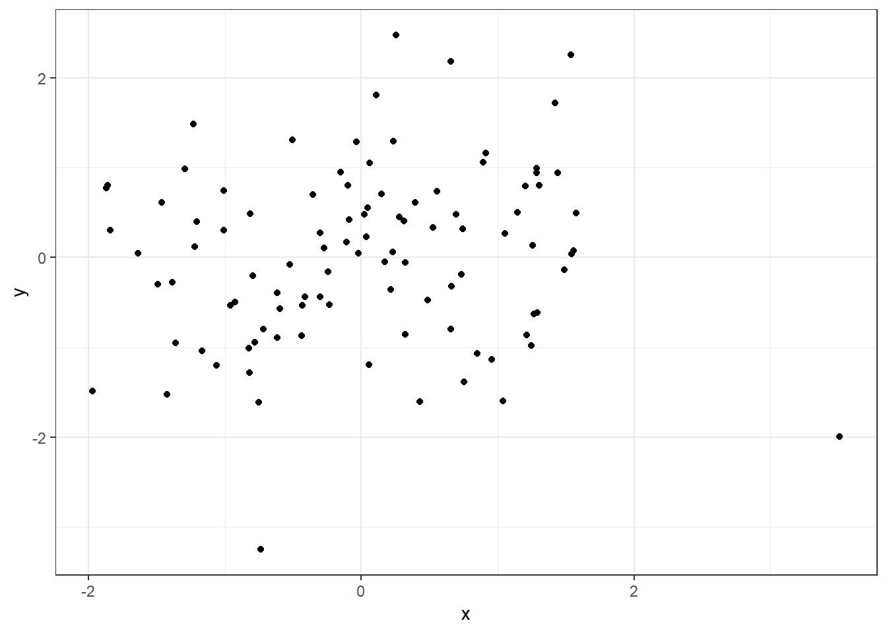
data('mpg')The following code produces an example table using the “mpg” dataset.
# Import example dataset and output a table in the markdown document
data('mpg')
datatable(mpg, caption='Mileage')# Read in csv from url
catch_data = read.csv(url("https://knb.ecoinformatics.org/knb/d1/mn/v2/object/df35b.302.1", method = "libcurl"), stringsAsFactors = FALSE)The pipe function (%>%) takes an initial defined argument and passes it as the first argument in an initial command. For every subsequent command where the pipe is repeated, the output from the last command is input as the first argument in a subsequent command. The final command needs to be stored as a variable.
# Select columns for analysis and transpose into a new table shape
catch_data = catch_data %>%
select(Region, Year, Chinook, Sockeye, Coho, Pink, Chum)
# Gather the data frame and save as a new data frame
catch_gather = gather(catch_data, key = species, value = catch, Chinook, Sockeye, Coho, Pink, Chum)The output table has “gathered” the catch-species columns into a “species” column and a “catch” column. The key specifies the new column name for the column names listed in the arguments and the value specifies the new column name for the values that existed within the columns listed in the arguments.
# Spread the gathered data back to its wide form and save as a new data frame
catch_spread = spread(catch_gather, key = species, value = catch, fill = NA)The syntax for spreading the data functions in opposite such that key specifies the column headings to be added and the value parses into those columns.
# Add a new field to data frame and multiply by 1000 to correct for units. An error for a non-numeric value in row 401 is corrected by converting to integer.
catch_gather = catch_gather %>%
rename(catch_thousands = catch) %>%
rename(regionCode = Region) %>%
mutate(catch_thousands = ifelse(catch_thousands == "I", 1, catch_thousands),
catch_thousands = as.integer(catch_thousands)) %>%
mutate(catch = catch_thousands * 1000)# Example summary by species
catch_species = catch_gather %>%
group_by(species) %>%
summarize(catch_mean = mean(catch), num_obs = n())
# Example summary for Chinook salmon by year
catch_chinookYear = catch_gather %>%
filter(species == 'Chinook') %>%
group_by(Year) %>%
summarize(catch_mean = mean(catch), num_obs = n()) %>%
arrange(desc(catch_mean))
# Display table
datatable(catch_chinookYear, caption='Summary Table')The next csv to read in to a data frame contains full names that correspond to the region codes. This data frame will allow the addition of the region codes to the gathered catch data frame.
# Read in the region names csv from url
region_names = read.csv(url("https://knb.ecoinformatics.org/knb/d1/mn/v2/object/df35b.303.1", method = "libcurl"), stringsAsFactors = FALSE)Joins between data frames in R function similarly to SQL relational databases. For small data projects, data manipulation in R is likely adequate. For large datasets or datasets that require long-term maintenance, SQL is a better data manipulation language.
# Select and rename fields from the region_names data frame
region_names = region_names %>%
select(code, mgmtArea) %>%
rename(region = mgmtArea) %>%
rename(regionCode = code)
# Perform a left join to add the full region name to the catch_gather data frame
catch_gather = left_join(catch_gather, region_names, by = c('regionCode' = 'regionCode'))# Read Andrew and Volk 2017 escapement goals csv into data frame
escapement_goals = read.csv(url("https://knb.ecoinformatics.org/knb/d1/mn/v2/object/knb.92014.1", method = "libcurl"), stringsAsFactors = FALSE)
# Filter escapement goals data frame to Bristol Bay region and sockeye salmon
escapement_goals = filter(escapement_goals, Species == 'Sockeye' & Region == 'Bristol Bay' & Type == 'SEG')
# Change Lower field to numeric in escapement goals
escapement_goals$Lower = as.numeric(escapement_goals$Lower)
# Replace 'eliminated' value in Lower field with NA and change to numeric
escapement_goals = mutate(escapement_goals, Lower = ifelse(Lower == "eliminated", NA, Lower), Lower = as.numeric(Lower))
# Select System, Upper, and Lower fields from escapement_goals
escapement_goals = select(escapement_goals, System, Lower, Upper)
# Read ADF&G 2017 daily escapement counts csv into data frame
daily_escapement = read.csv(url("https://knb.ecoinformatics.org/knb/d1/mn/v2/object/knb.92020.1", method = "libcurl"), stringsAsFactors = FALSE)
# Filter escapement counts data frame to Bristol Bay region and sockeye salmon
daily_escapement = daily_escapement %>%
rename(Region = SASAP.Region) %>%
filter(Species == 'Sockeye' & Region == 'Bristol Bay')
# Parse date field to multiple fields
daily_escapement = separate(daily_escapement, sampleDate, c("year", "month", "day"), "-")
# Calculate annual total escapements for each stock and integrate escapement goal upper and lower and store as new data frame
annual_escapement = daily_escapement %>%
group_by(year, Location) %>%
summarize(annualEscapement = sum(DailyCount))
# Perform an inner join between annual_escapement and escapement goals to join the upper and lower bounds to the annual escapement for systems/locations for which SEG escapement goals have been documented
annual_escapement = inner_join(annual_escapement, escapement_goals, by = c('Location' = 'System'))
# Add new field 'goalMet' indicating a boolean for the statement 'The observed escapement was between the upper and lower goal bounds'
annual_escapement$goalMet = annual_escapement$annualEscapement > annual_escapement$Lower & annual_escapement$annualEscapement < annual_escapement$Upper
# Create empty vectors to hold data from loop
percentMet = NULL
stock = NULL
# Loop through unique values of 'Location' field, which represent different stocks, calculate the percent of years for which SEG escapement goals were met, and append calculation value and stock name to vectors
for (i in unique(annual_escapement$Location)) {
stock_escapement = filter(annual_escapement, Location == i)
percentMet = append(percentMet, sum(stock_escapement$goalMet)/nrow(stock_escapement))
stock = append(stock, i)
}
# Create data frame from the loop vectors
percent_met = data.frame(stock, percentMet)
# Display table
datatable(percent_met, caption='Percent of escapement goals met')The aesthetic dataset should be mapped into the main ggplot, not the geometry. The geometry should be added afterwards. It is possible to add multiple datasets into a single plot, but they will have competing geometries. This causes a plot that is difficult to interpret. In general, a single plot should have a single aesthetic dataset.
The plot could have multiple geometries: for example, a point plot with a line of best fit. Adding geometries can be thought of as adding multiple layers using the same dataset mapping. Each line in a ggplot must be connected with a ‘+’.
Colors and fills and the column that differentiates colors are defined in the aesthetic. Aesthetics map the data. The mappings are different than the settings. Settings can be defined in the geometry.
# Read monthly salmon permit values into data frame
permits <- read.csv(url("https://knb.ecoinformatics.org/knb/d1/mn/v2/object/urn%3Auuid%3Aa3c58bd6-481e-4c64-aa93-795df10a4664", method = "libcurl"), stringsAsFactors = FALSE)
# Define a new point plot based on the permits dataset with color set to 'Gear' field
ggplot(permits, aes(Value, StdDev, color = Gear)) +
geom_point() +
theme_bw()## Warning: Removed 223 rows containing missing values (geom_point).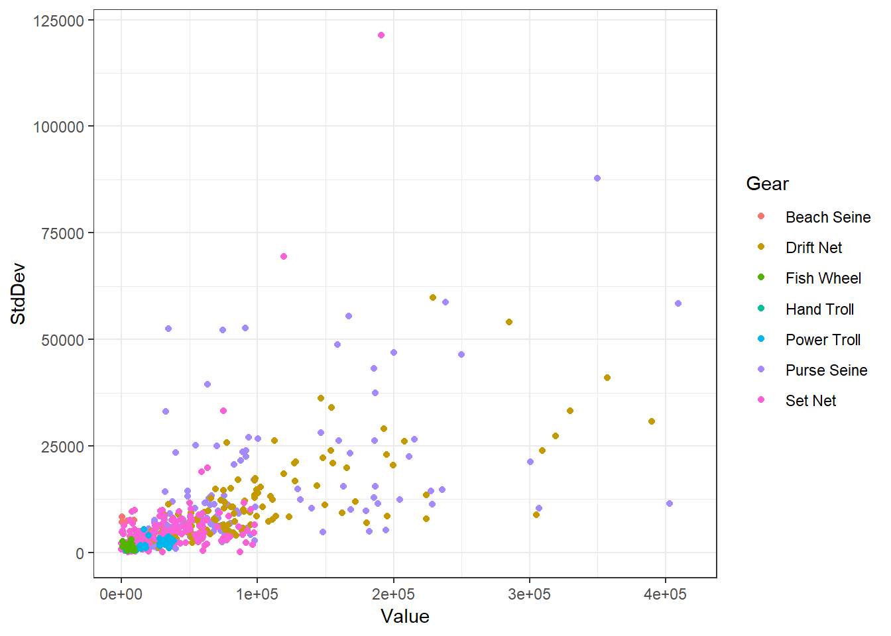
The size of the geometry can be defined as a constant or variable. For example, the size of points can be defined by a varible in the dataset.
# Modify point plot based on the permits dataset with size set to 'Range' field
ggplot(permits, aes(Value, StdDev, color = Gear, size = Range)) +
geom_point() +
theme_bw()## Warning: Removed 223 rows containing missing values (geom_point).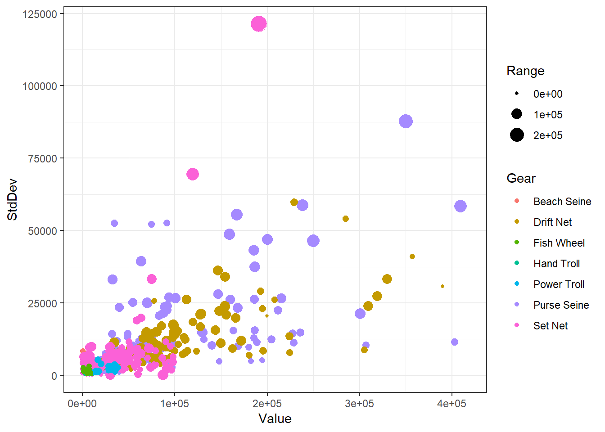
The type of plot is always defined by the geometry. The ggplot2 documentation includes links to all of the types of plots that are possible. The aesthetic arguments change depending on the geometry. For example, histograms only have an x axis defined.
In markdown, two plots produced in the same code chunk will be toggle-able by thumbnails. Discrete axes can be reordered by explicitly defining either an order as vector or a sort order.
# Create a column plot with the x axis defined as the 'Gear' field
permits %>%
group_by(Gear) %>%
summarize(meanval = mean(Value, na.rm = TRUE)) %>%
ggplot(aes(x=Gear, y=meanval/sum(meanval))) +
geom_col() +
scale_y_continuous(labels = scales::percent)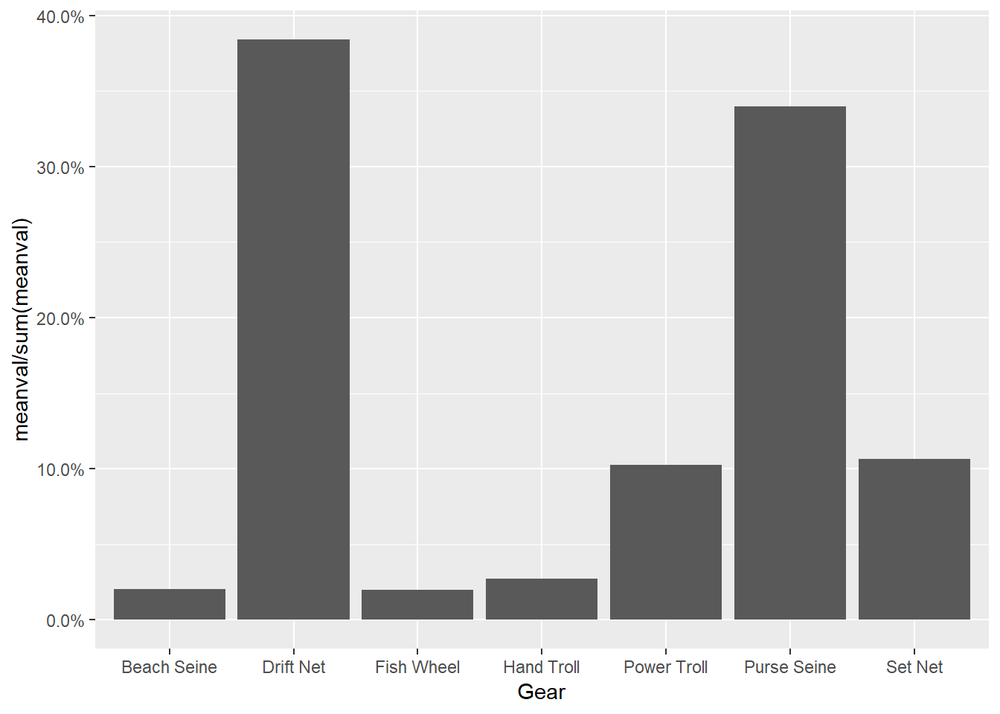
# Creat a violin plot of just the data from Cook Inlet
permits_CookInlet = filter(permits, Region == 'Cook Inlet')
ggplot(permits_CookInlet, aes(x=Gear, y=Value)) +
geom_violin() +
theme_bw()## Warning: Removed 1 rows containing non-finite values (stat_ydensity).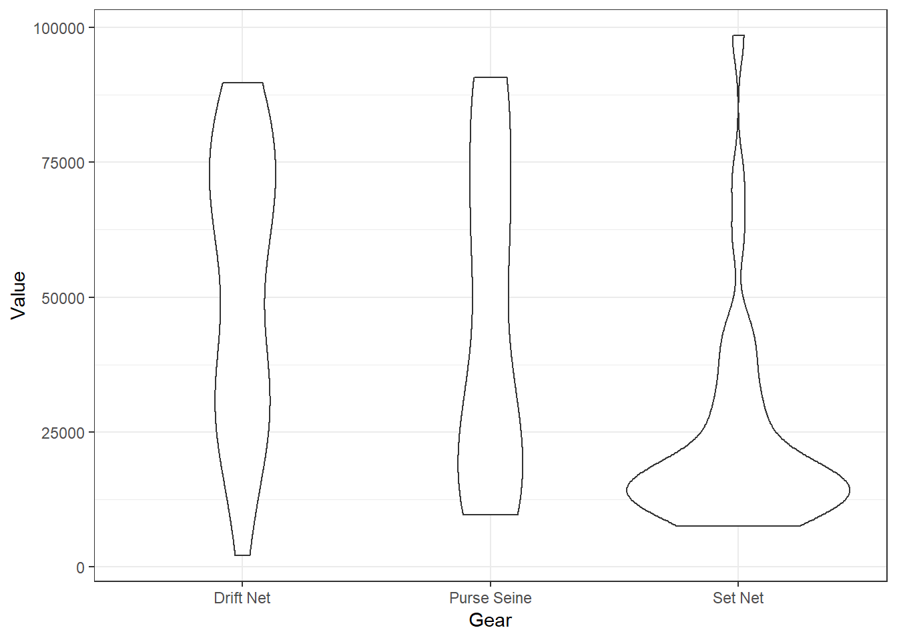
# Create a violin plot of just the data from Bristol Bay
permits_BristolBay = filter(permits, Region == 'Bristol Bay')
ggplot(permits_BristolBay, aes(x=Gear, y=Value)) +
geom_violin() +
theme_bw()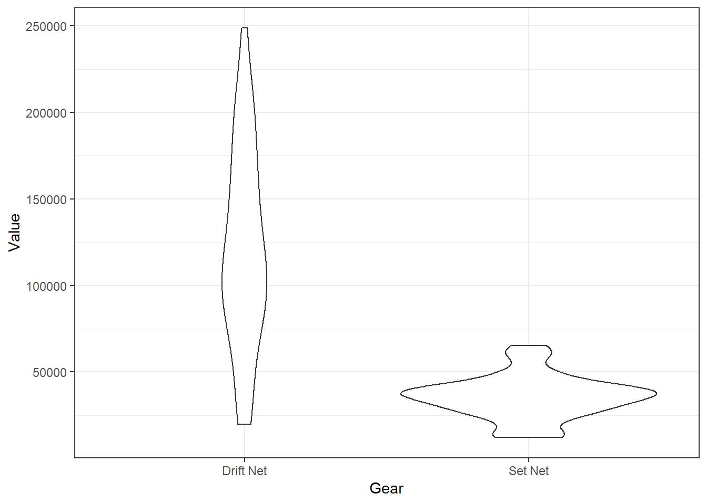
Geometry-specific settings can be added per geometry when adding multiple layers so that the layers match better, etc.
# Add point geometry overlaying violin geometry
ggplot(permits_CookInlet, aes(x=Gear, y=Value)) +
geom_violin() +
geom_point(position = 'jitter', shape = 1) +
theme_bw()## Warning: Removed 1 rows containing non-finite values (stat_ydensity).## Warning: Removed 1 rows containing missing values (geom_point).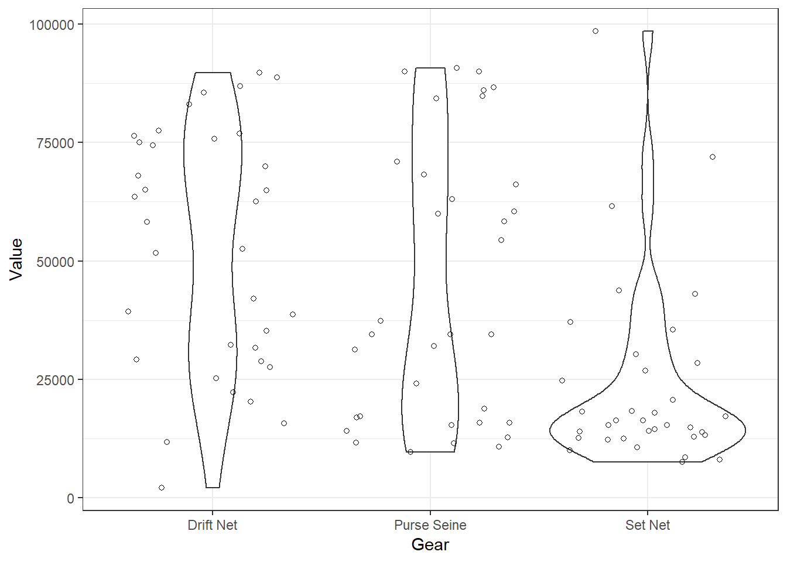
# Add point geometry over a smoothing algorithm
ggplot(permits_CookInlet, aes(x=Value, y=StdDev)) +
geom_smooth(method = 'loess') +
geom_point() +
theme_bw()## Warning: Removed 27 rows containing non-finite values (stat_smooth).## Warning: Removed 27 rows containing missing values (geom_point).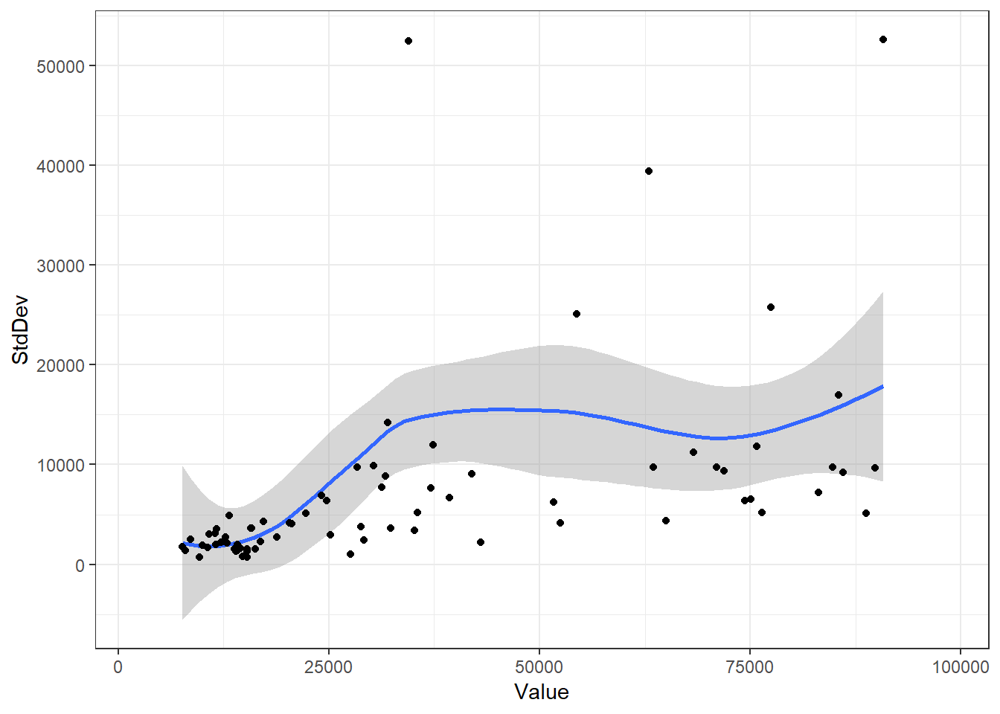
Scales can be defined based on limits in the data. Defining scales should be done after adding geometries. The scales can also be defined as cartesian coorindates limits.
# Create a new data frame of permits in Southeast using Purse Seine gear
permits_Southeast = filter(permits, Region == 'Southeast' & Gear == 'Purse Seine')
# Define scales in plot using scale_continuous
ggplot(permits_Southeast, aes(x=Year, y=Value)) +
geom_point() +
geom_line() +
scale_y_continuous(limits = c(0, max(permits_Southeast$Value))) +
scale_x_continuous(limits = c(2000, max(permits_Southeast$Year))) +
theme_bw()## Warning: Removed 18 rows containing missing values (geom_point).## Warning: Removed 18 rows containing missing values (geom_path).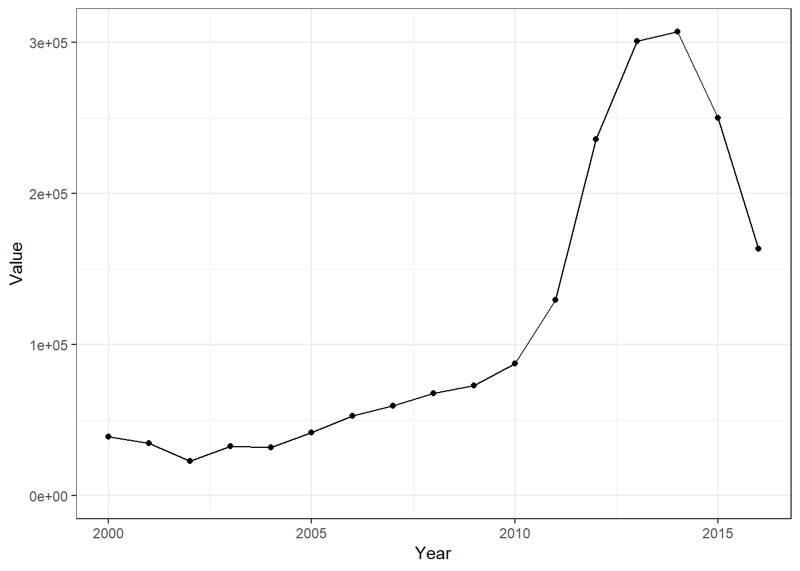
# Define scales in plot usings cartesian coordinates
ggplot(permits_Southeast, aes(x=Year, y=Value)) +
geom_point() +
geom_line() +
coord_cartesian(xlim = c(2000, 2000, max(permits_Southeast$Year)), ylim = c(0, max(permits_Southeast$Value))) +
theme_bw()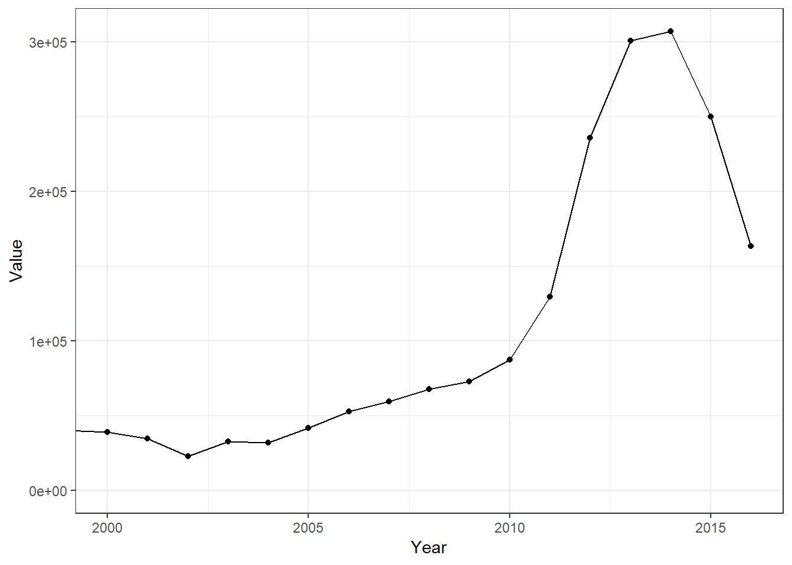
Scale colors can be defined using the hue setting. Scale color brewer is an easy way to set colors using predefined color schemes. The type of scale in either dimension can be defined according to settings available in the ggplot documentation.
# Define color scheme and axis type
ggplot(permits, aes(x=Value, y=StdDev, color = Gear)) +
geom_point() +
scale_color_brewer(palette = "Paired") +
scale_x_log10() +
theme_bw()## Warning: Transformation introduced infinite values in continuous x-axis## Warning: Removed 223 rows containing missing values (geom_point).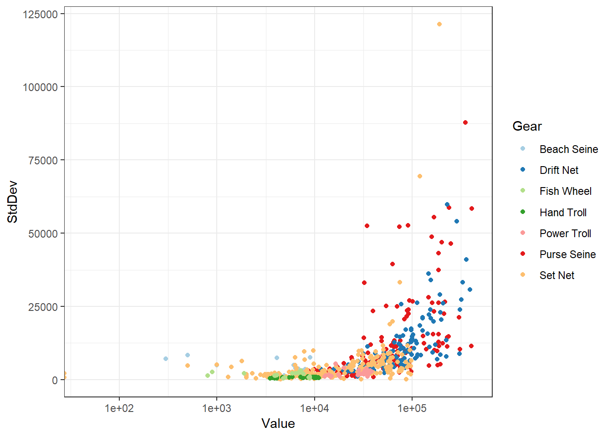
Plots can be broken into discrete sub-plots using the facet function. The tilda specifies the variable by which to split the sub-plots. Facet wrap is used for one-dimensional sequences and facet grid is used for two-dimensional sequences.
# Create a plot that is faceted based on 'Gear' field
ggplot(permits, aes(x=Year, y=Value)) +
geom_point() +
facet_wrap(~Gear) +
theme_bw()## Warning: Removed 14 rows containing missing values (geom_point).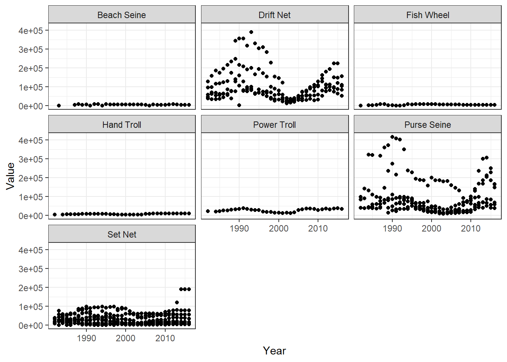
Defining labels can be done using the ‘labs’ function.
# Set the labels for the titles and y-axis
ggplot(permits, aes(x=Year, y=Value)) +
geom_point() +
facet_wrap(~Gear, ncol = 2, scales = 'free') +
labs(y = 'Permit Value', title = 'Permits by Gear Type', subtitle = 'I am a computer') +
theme_bw()## Warning: Removed 14 rows containing missing values (geom_point).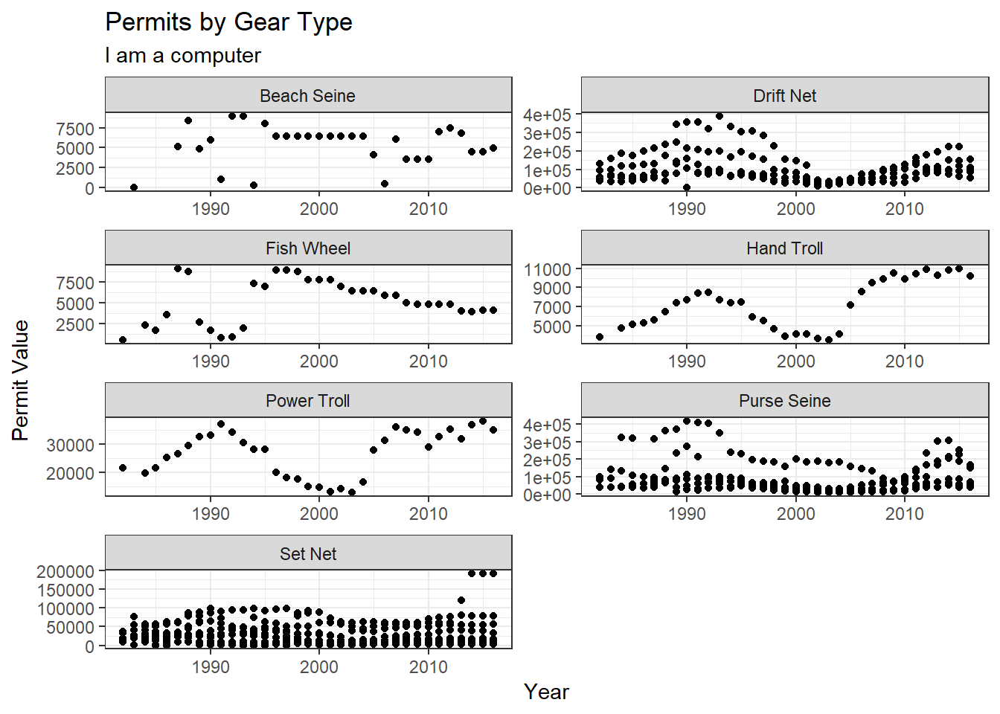
Pre-existing themes for ggplot2 are available. These change the styling with pre-configured settings for background, axes, etc. The default is theme_gray. The available themes are available on the ggplot2 documentation.
# Change the theme to a different pre-configured option
ggplot(permits, aes(x=Year, y=Value)) +
geom_point() +
facet_wrap(~Gear) +
labs(y = 'Permit Value', title = 'Permits by Gear Type', subtitle = 'I am a computer') +
theme_dark()## Warning: Removed 14 rows containing missing values (geom_point).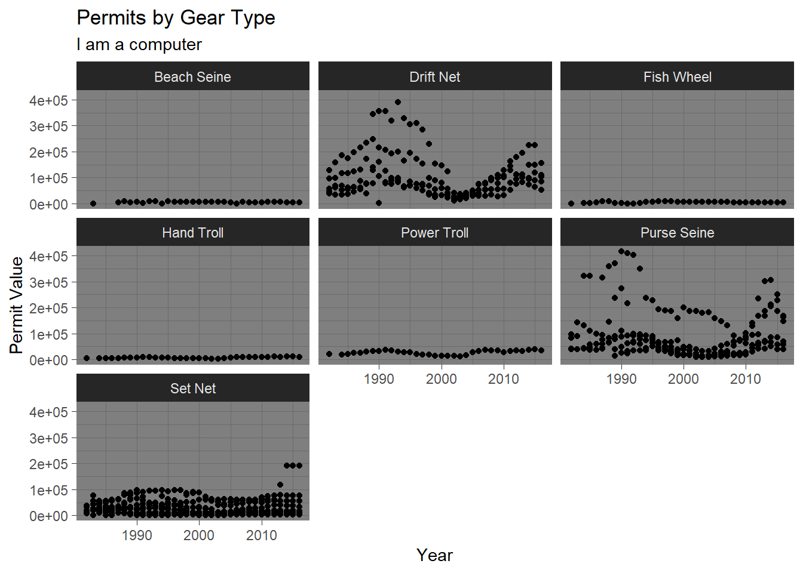
Themes can also be used to modify the general styling of a plot. The ggplot2 documentation has a full list of the options that are available through the theme. The theme modifies the elements of background elements and elements surrounding the aesthetic/geometries.
# Change the theme settings to move the legend to the bottom
ggplot(permits, aes(x=Value, y=StdDev, color = Gear)) +
geom_point() +
scale_color_brewer(palette = "Paired") +
scale_x_log10() +
theme(legend.position = "bottom") +
theme_bw()## Warning: Transformation introduced infinite values in continuous x-axis## Warning: Removed 223 rows containing missing values (geom_point).You can also save the theme as a variable and call it into a plot. If the theme is in an external script that is called in then you would be able to apply the same theme across plots in multiple projects. The same idea applies to other settings (i.e. you can set any plot aspect to a variable). Plots can also be built into functions that are then applied to many datasets. This would allow changing all plots by changing the function. Or you could build a personal plotting package with functions for multiple plot geometries and call it into your scripts as a library.
# Change the theme settings to move the legend to the bottom
my_theme = theme(axis.title = element_text(size=16), axis.text = element_text(size = 12))
ggplot(permits, aes(x=Value, y=StdDev, color = Gear)) +
geom_point() +
scale_color_brewer(palette = "Paired") +
scale_x_log10() +
labs(y = 'Permit Value', title = 'Permits by Gear Type', subtitle = 'I am a computer') +
my_theme +
theme_bw()## Warning: Transformation introduced infinite values in continuous x-axis## Warning: Removed 223 rows containing missing values (geom_point).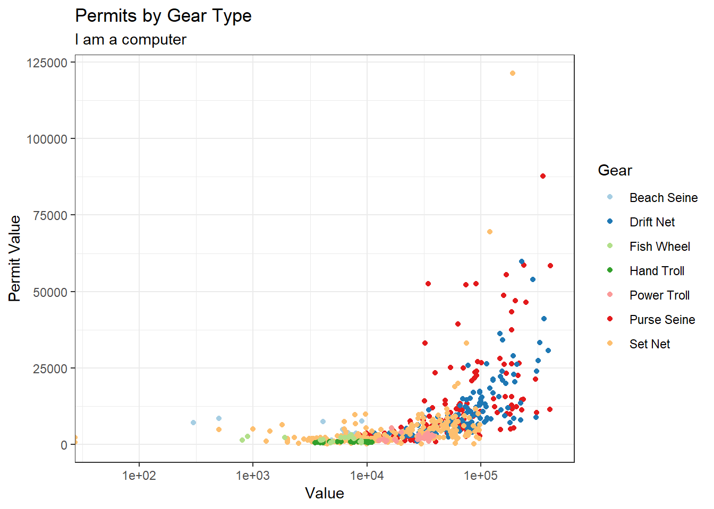
Plots can be easily saved using “ggsave” command. This method works better for ggplot2 than any of the export methods from base R.
# Save plot as a variable
my_plot = ggplot(permits, aes(x=Value, y=StdDev, color = Gear)) +
geom_point() +
scale_color_brewer(palette = "Paired") +
scale_x_log10() +
labs(y = 'Permit Value', title = 'Permits by Gear Type', subtitle = 'I am a computer') +
my_theme +
theme_bw()
# Export plot to png
ggsave('fish.png', plot = my_plot, width = 5)## Saving 5 x 5 in image## Warning: Transformation introduced infinite values in continuous x-axis## Warning: Removed 223 rows containing missing values (geom_point).Github pages works by setting up an index.html file in the repository. The index.html file can be generated using rmarkdown (or they could be generated using other methods).
# Read ADF&G 2017 daily escapement counts csv into data frame
daily_escapement = read.csv(url("https://knb.ecoinformatics.org/knb/d1/mn/v2/object/knb.92020.1", method = "libcurl"), stringsAsFactors = FALSE)
# Filter escapement counts data frame to Bristol Bay region and sockeye salmon
daily_escapement = daily_escapement %>%
rename(Region = SASAP.Region)
# Parse date field to multiple fields
daily_escapement = separate(daily_escapement, sampleDate, c("year", "month", "day"), "-")
# Calculate the sum escapement for annual escapement per
median_escapement = daily_escapement %>%
group_by(Species, Region, year, Location) %>%
summarize(escapement = sum(DailyCount))
# Calculate median escapement by species
median_escapement = median_escapement %>%
group_by(Species) %>%
summarize(medianEscapement = median(escapement))
# Create a plot of median escapement by species
ggplot(median_escapement, aes(Species, medianEscapement)) +
geom_col() +
coord_flip() +
theme_bw()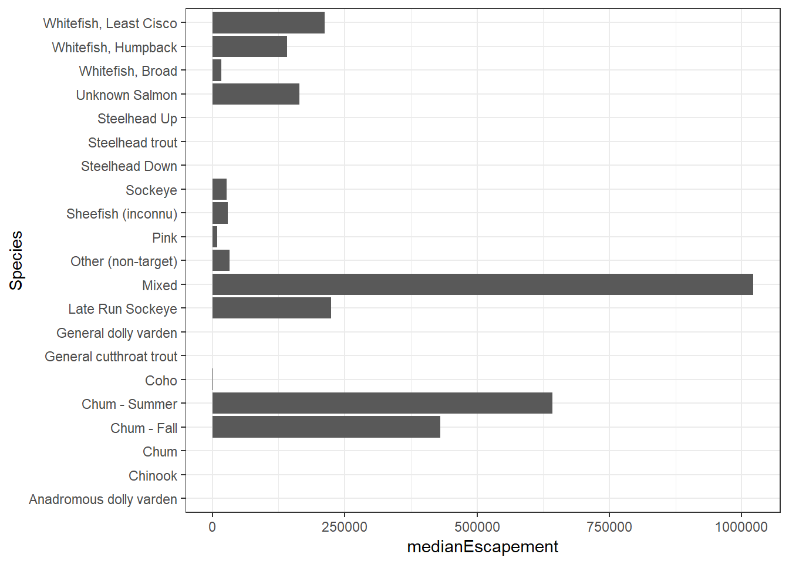
# Identify unique locations and add to new data frame
locations = daily_escapement %>%
distinct(Location, Latitude, Longitude) %>%
drop_na()
# Correct positive longitudes
locations$Longitude = ifelse(locations$Longitude < 0, locations$Longitude, locations$Longitude * -1)
# Add data table display to the R markdown output
datatable(locations)Leaflet is a javascript mapping application. R has a package to interface with leaflet.
# Add a marker
markerIcon <- makeIcon(
iconUrl = "https://cdnjs.cloudflare.com/ajax/libs/leaflet/1.3.1/images/marker-icon.png",
iconWidth = 25, iconHeight = 41,
iconAnchorX = 12, iconAnchorY = 41,
shadowUrl = "https://cdnjs.cloudflare.com/ajax/libs/leaflet/1.3.1/images/marker-shadow.png",
shadowWidth = 41, shadowHeight = 41,
shadowAnchorX = 13, shadowAnchorY = 41
)
# Create a leaflet map based on the locations
leaflet(locations) %>%
addTiles() %>%
addMarkers(~ Longitude, ~ Latitude, popup = ~ Location, icon = markerIcon)The End!